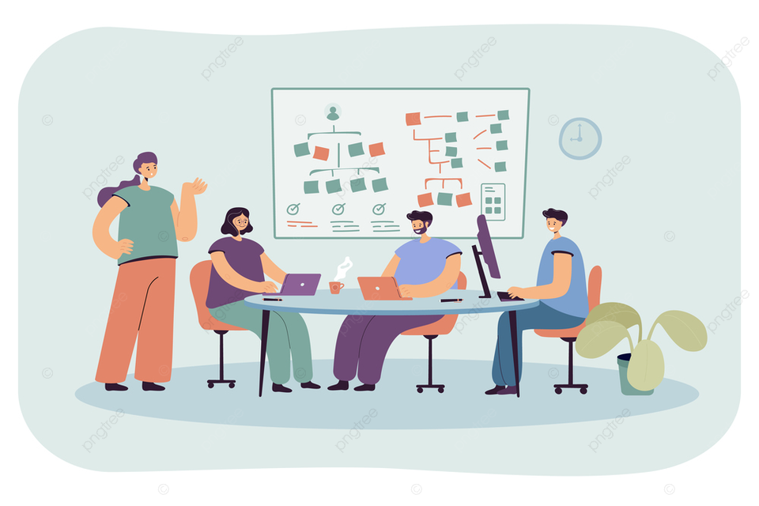
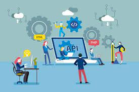

Allianz Seguros
03/2021 actualidad
Como parte del equipo de UX analizamos datos de navegación y implementamos mejoras en diversos
servicios de la compañia para mejorar tanto la experiencia de usuario como la indexación de dichos servicios.
Mis tareas fueron:
- Analizar datos de navegación e indexación, plantear hipótesis, diseñar experimentos e iterar
- Adaptar componentes de más de 100 Landing Pages para adaptarlas a los requerimientes de las Core
Web Vitals,consiguiendo un CLS de 0 y reduciendo el Total Blocking time a menos de 120ms
TravelPerk
10/2016-04/2021
En Travel Perk trabajé en la integración de 2 APis de proveedores de vuelos y
hoteles con React.
Una de estas dos integraciones contribuyó considerablemente al éxito de un feature que ofrece a más de
2M de usuarios semanales los resultados de más de 100M de consultas a la API del proveedor, ordenandolas
por relevancia y permitiendo a los usuarios filtrar según sus preferencias en más de 50 variables. Como
parte de un equipo Agile con más de 25 Develops, mis principales tareas fueron:
- Participar en reuniones de concepto con diseño, producto y UX para alinear las especificaciones
de features.
- Desarrollar el Front End de integraciones con terceres usando Bootstrap, Reactj.js y Docker.
- Unit testing con Jest y documentar el codigo junto con el equipo Back-end.
- Gestión de incidencias en JIRA y fix de bugs o features detectados en el entorno de pruebas

Asesora.com
08/2013-08/2016
Con el fin de traer al mercado español la cultura del "financial advisor" en los países anglosajones,
asesora.com ofrece un marketplace que viene a democratizar la asesoría fiscal poniendo en contacto a
pequeños inversores/ ahorradores con asesores freelance y firmas de asesoría fiscal boutique.
En su etapa early stage, me uní al Full-Stack Developer que había desarrollado el marketplace con
Bootstrap, PHP, Codeigniter y una base de datos MySQL, mis principales tareas fueron:
- Desarrollo Front-End de nuevos features en ambos lados del marketplace e integración de una API de pagos.
- La creación de una Landing Page con una calculadora de plusvalías según varios inputs del cliente y
diversos escenarios de inversión, que logró captar el email de más de 1M de nuevos usuarios inversores/
ahorradores.
- Desarrollo de Landing Pages interactivas y implementación de mejoras reportadas via Trello.